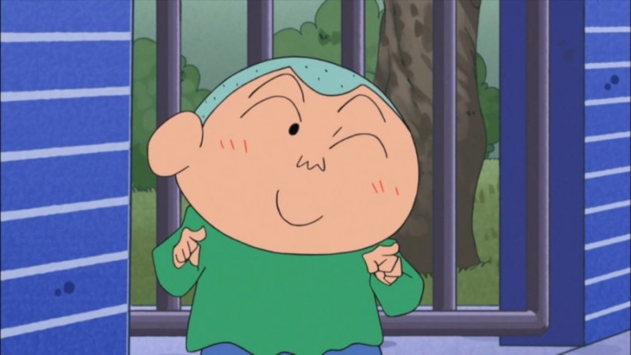

<환> 훈이네 <영>

이훈이
- 나이 : 5살
- 소속 : 떡잎유치원 해바라기반
- 직업 : 유치원생
- 좋아하는 것 : 수지, 액션가면
- 싫어하는 것 : 리얼 소꿉놀이, 수지의 무관심, 자신을 놀리는 것
- 별명 : 주먹밥 머리
- 특징 : 마음이 매우 여리고, 소심하고 겁이 많으며 자주 운다.
훈이 엄마
- 나이 : 30대
- 직업 : 전업주부
- 좋아하는 것 : 게임, 한류문화, 테니스
- 싫어하는 것 : 훈이의 편식
- 특징 : 배용준의 팬이다.
훈이 아빠
- 특징 : 과거 훈이 엄마의 호감을 사기 위해 록밴드에서 기타를 연주했다고 거짓말을 한 적 있다.